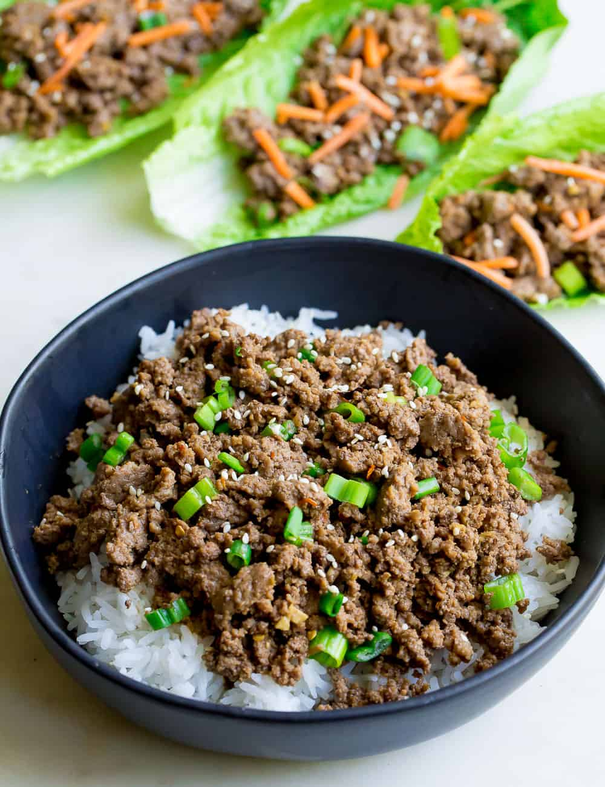

Korean Beef

Delicious Korean Beef with White Rice!
This dish is an all time favorite for my family!
It has just two main igredients; beef and white rice. This means it's easy to make!
Ingredients
- 1 pound lean ground beef
- 3 garlic cloves
- 1/4 cup packed brown sugar
- 2 teaspoons sesame oil
- 1/4 teaspoon ground ginger
- 1/4 teaspoon crushed red pepper flakes
- 1/4 teaspoon pepper
- 2 cups hot cooked white rice
- Sliced green onions and sesame seeds for garnish
Recipe Instructions
- In a large skillet cook the ground beef and garlic breaking it into crumbles
over medium heat until no longer pink. Drain the grease.
- In a small bowl whisk brown sugar, soy sauce, sesame oil, ginger, red pepper flakes and pepper.
Pour over the ground beef and let simmer for another minute or two.
- Serve over hot rice and garnish with green onions and sesame seeds!